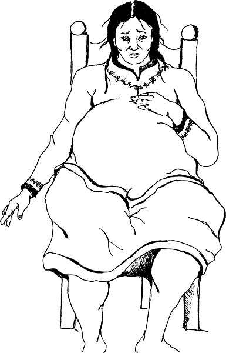

If the woman's contractions are not coming every 2 or 3 minutes and lasting for a full minute, she may not be in strong labor yet.
Encourage her to sleep. If she cannot sleep, you can try to start labor. Start with the first method and if it does not work, try the next: